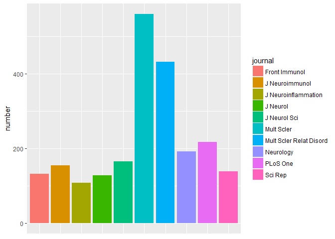
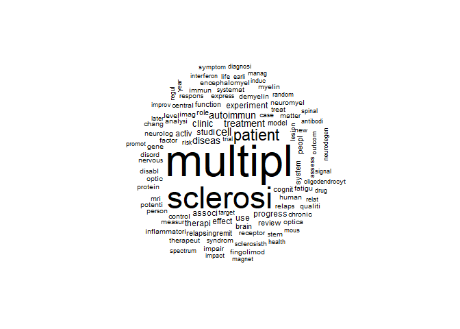
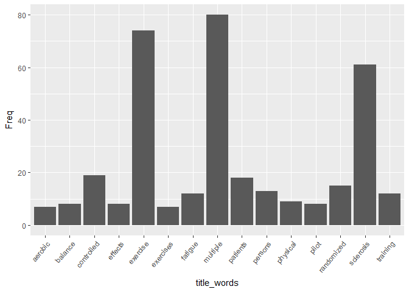
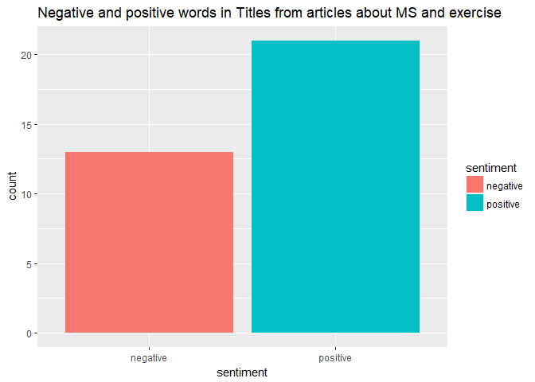
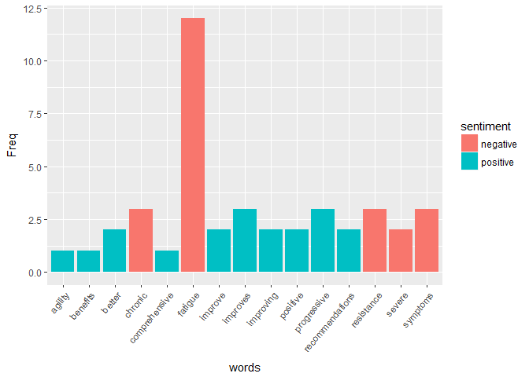

Hi athletes. I recently went to a Multiple Sclerosis (MS) conference in Paris organized by the ARSEP foundation, mostly to see what people are doing on the immunology side of the disease, and I started looking into the foundation a bit more and that’s how I started doing this article. Multiple sclerosis is an inflammatory disease of the Central Nervous System (CNS). It is an auto-immune disease which means that our own immune system attacks us. In this case it attacks the myelin sheath which cover the neurone’s axones. The cause of the disease is not completely elucidated, but it is probably multifactorial, and the symptoms themselves are various. The ARSEP foundation helps finance research projects on MS, as well as conferences and other events to inform people about the disease through information campaigns. But they also have programmes linked to exercise called “défis sportifs”, which translates to “sport challenges”. A brand was created to raise money for the foundation called “solidaires en peloton”, meaning “pack solidarity”. They have their own racing events with one in Paris on October 28th 2018 with a 5k, 10k and relay 10k as well as a walk and children’s events. I highly recommend you try to go, the bigger the event, the greater its impact. Other races also give their profit to the foundation, you can find the whole list on their facebook page. I hope to see you at some of their events!
My article is going to be about how exercise can affect patients with MS. If one of ARSEP’s main events include sports events, it probably means that it is important, but I want to confirm that in this article in my own way.
I am going to scrape the Pubmed database with the RISMed package as I’ve done in this article about triathlon and this one about athlete’s foot, to see how extensive the research is on the disease, and then we will focus on the articles that mention exercise.
Number of publications about Multiple sclerosis in the last 10 years limited to 10000 articles pulled
There are 3.989110^{4} publications on the pubmed database total about MS published in the last 10 years. The standard deviation for the number of articles published in successive years is 1.
Most publishing journals on the subject
Here are the top 10 most publishing journals:

Most of the publications belong to the dedicated journals “Multiple Sclerosis” and “Multiple Sclerosis related disorders”, but there are also a few Neurobiology journals and an Immunology journal. It corresponds to the kind of subjects I saw at the conference, which is pretty diverse because you find doctors, immunologists and neurobiologists, sometimes other fields.
WordCloud of the most common words in the titles
The wordcloud is one of my favorite figures to generate with R and I frequently generate them for my amused colleagues at work (bless them, they think I’m a little crazy). It is a subject in a nutshell really, so I think they are quite useful.

Are exercise and sports popular subjects in the study of MS?
I am running some code to search through the articles for specific words, here we are interested in exercise and sports related to the MS disease. I’m using a simple “grep()” function in a loop to get the articles:
“Exercise” is mentioned in 95 articles out of 9950 which constitutes 0.95 % of articles.
“Sport” is mentioned in 28 articles out of 9950 which constitutes 0.28 % of articles, which is less than “exercise”.
Even if those number are not very high, I think it’s still an important subject to look into given what I said in the intro. I want to know if all the articles that mention sports were all among the ones that mention exercise with the “intersect()” function from base R and it returns: “integer(0)”. Ok so they have no articles in common, that’s strange. I am goint to focus on the ones that mention exercise from then on because it has more articles.
Top 15 words in articles about MS mentioning exercise
What I want to do now is sort out through those articles using R to not have to read all those articles to come up with the general conclusions on exercise in the case of MS patients. So I am going to look up the top 15 most used words in the titles of articles about MS mentioning exercise and plot them:

In the top 15 words in articles about exercise for MS patients we find “randomized” for clinical trials, “fatigue”, “balance”, “training”, and “effects”, which tells me that exercise is studied as a way to make the disease easier to cope with, they are looking for direct effects on general fatigue and balance.
Sentiment analysis on exercise in the case of MS in articles
I want to do a small sentiment analysis to identify whether researchers are optimistic of using exercise to help with MS symptoms by joining the titles of the articles I’ve pulled up to the “sentiment” database from tidytext package. First I am plotting the number of negative vs positive words in the titles:

Positive outweighs negative that’s great! Let’s look at the top 15 words and where they belong in the positive vs negative spectrum:

Except for fatigue, that is mentioned a lot, most of the words in the top 15 are positive and mentioned somewhat equally. But then again, fatigue could be mentioned as something that exercise helps to get rid of.
More advanced analysis of articles: Trials about exercise in MS
I first want to focus on the trials in MS that are about exercise as a way to screen articles even more.
There are 18 articles on MS AND exercise AND that mention trials. One in particular attracts my attention:
## [1] High-intensity interval exercise improves cognitive performance and reduces matrix metalloproteinases-2 serum levels in persons with multiple sclerosis: A randomized controlled trial.
Article analysis: MMP2 serum levels reduced by HIIT exercise in MS, Zimmer et al, 2017
This article tickles my molecular biologist fancy so I’m going to look further into what that article is about. First I looked up what this protein is exactly, first on wiki. It is a protein that breaks down extra cellular matrix (a matrix of proteins and other molecules around cells that has many functions including holding them together and cell signalling) by degrading type IV collagen. A cool thing about this protein is that it is expressed as an inactive pro-protein which is activated by cleavage by a protease (a protein that can cut other proteins in specific spots).
I looked up the gene on NCBI’s gene database, and found it is a metalloprotease/peptidase because it is dependant on Zinc. On the NCBI website I found the expression profiles for different tissues and it is expressed very little in the brain and bone marrow compared to others.
If you scroll down further on that page, there is a “Pathways from Biosystems” part. In the list is “axon guidance”, “EPH ephrin signalling”, “ephrin mediated repulsion of cells” as well as some about the immune system and its actors. Those are interesting in the case of MS so I’d say the authors are probably on to something.
Let’s find some more information about the protein using a package I learned to use recently while helping a biologist colleague: BiomaRt.. It enables us to access the ensembl database which has a lot of information on genes. After taking a quick look at what I can retrieve with the “listAttributes()” function (for details on the code see my github page in “Works” tab of this website on the left of your screen). I chose to search for:
source
description
gene biotype
chromosome it is coded in
percentage of GC nucleotides content
transcription count
I put in argument MMP2 as the wiki gene name, because it is the one I found on Wikipedia when I googled it. I got the following table:
## source
## 1 ensembl_havana
## description
## 1 matrix metallopeptidase 2 [Source:HGNC Symbol;Acc:HGNC:7166]
## gene_biotype chromosome_name percentage_gene_gc_content
## 1 protein_coding 16 45.67
## transcript_count
## 1 8
Aq the query will only allow you to retrieve 5 different columns of information, I want to look at the alternate names and description as well as the family description in this next part with a new query with first the gene name, its family description, wikigene description and below the interpro description:
## external_gene_name
## 1 MMP2
## family_description
## 1 72 KDA TYPE IV COLLAGENASE PRECURSOR EC_3.4.24.24.72 KDA GELATINASE GELATINASE A MATRIX METALLOPROTEINASE 2 MMP 2 [CONTAINS PEX]
## wikigene_description interpro_description
## 1 matrix metallopeptidase 2 Fibronectin type II domain
## [1] "Fibronectin type II domain"
## [2] "Hemopexin-like domain"
## [3] "Peptidase M10, metallopeptidase"
## [4] "Peptidase, metallopeptidase"
## [5] "Kringle-like fold"
## [6] "Hemopexin, conserved site"
## [7] "Hemopexin-like repeats"
## [8] "Peptidase M10A, cysteine switch, zinc binding site"
## [9] "Peptidase M10A"
## [10] "Metallopeptidase, catalytic domain superfamily"
## [11] "72kDa type IV collagenase"
## [12] "Peptidase M10A, catalytic domain"
## [13] "PGBD superfamily"
## [14] "Hemopexin-like domain superfamily"
## [15] "Fibronectin type II domain superfamily"
## [16] "Peptidoglycan binding-like"
## [17] "PGBD-like superfamily"
## [18] ""
The interpro description, a UK based database, gave many rows of different descriptions.
Ok now that we now a bit more about this protein, let’s check out what the article says:
first it states it is based on the fact that exercise in the elderly help with cognitive function
The method tested was 3 weeks of high intensity aerobic training (HIIT)
They tested it on 60 patients with a disease EDSS code between 1 and 6.5 (EDSS is a score given to the disease according to disability)
In the article they state that in MS “brain tissue levels of MMP-2, -7, -9 and -12 are reported to be elevated.“, so it’s not just MMP2. Actually in their table 2 they show levels of MMP2 and MMP9 but only MMP2 diminished significantly after HIIT training. However it did start out much higher than the control group, whose value of MMP2 also increased, so that’s a little disappointing, and they do mention that more work needs to be done on this.
Still, the article is proof that researchers seem to think that exercise really has an impact on MS patients, and that this is being studied at the molecular level.
Conclusion
This article text mining analysis of MS and its relation to exercise shows that exercise is being studied as a way to help with symptoms of the disease by many researchers even at the molecular level, and mostly seem to show positive impact.
I hope you’ve enjoyed this article, it took me a little more time to put it together and I’ve had PhD struggles to deal with as well this week so I didn’t publish anything last week, but I’m happy with this article, hopefully you are too!
Don’t forget to check out the ARSEP foundation and its events, see you next time!
Sciathlete